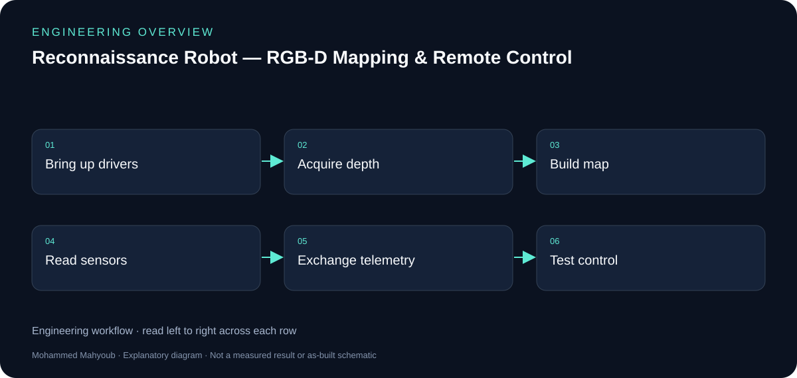
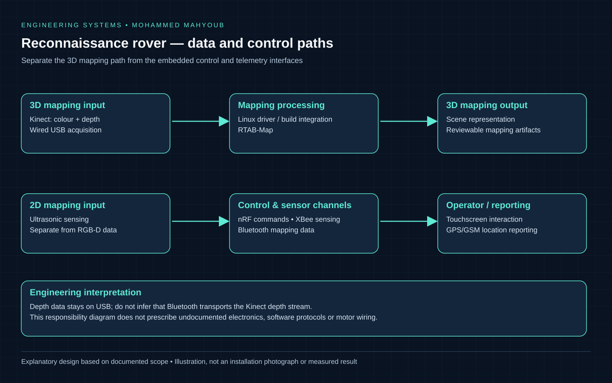

Robotics · RGB-D Mapping · Embedded Integration
Reconnaissance Robot — RGB-D Mapping & Remote Control
Designed, programmed, integrated and tested a reconnaissance rover combining Kinect-based 3D mapping, ultrasonic 2D mapping, environmental sensing, GPS/GSM reporting and remote control.
Implemented Project
System overview

- Author
- Mohammed Mahyoub
- Role
- End-to-end implementation: system design, programming, assembly, integration, testing and documentation.
- Mapping
- Integrated a Microsoft Kinect RGB-D sensor with RTAB-Map on Linux; built the required software and sensor drivers. Used ultrasonic sensing for 2D mapping.
- Interfaces
- Integrated a four-motor rover, a touchscreen controller, XBee sensor telemetry, nRF control, Bluetooth mapping data and GPS/GSM location reporting.
- Integration
- Resolved software-build and Kinect-driver compatibility issues; retained a wired USB connection for Kinect depth data.
Engineering rationale
Two mapping paths
Kinect supplies colour and depth to RTAB-Map on Linux for 3D mapping. Ultrasonic sensing supplies a separate 2D mapping path. These are complementary interfaces; Bluetooth mapping data is not described as carrying the Kinect depth stream.
Control and reporting interfaces
The four-motor rover and touchscreen controller are integrated with nRF control, XBee sensor telemetry, Bluetooth mapping data and GPS/GSM location reporting. Separate channels make it necessary to document which data uses which link.
The integration constraint
Software builds and Kinect drivers required compatibility work. The retained wired USB connection is a documented engineering decision for the depth-data path. The new diagram is a functional overview rather than a circuit schematic or a claim about undocumented motor-driver wiring.
Evidence and extension
The public description records design, programming, assembly, integration and testing. Source code, raw maps and physical-build photographs are not present in the inspected repository. The acceptance checklist below is a suggested way to document those artifacts when available.

Evidence and validation
Review the documented implementation against these validation topics; measured results are shown only where provided by the source.
- Driver compatibility and USB depth acquisition
- RTAB-Map output with scene context
- Command and telemetry channel mapping
- Motor/sensor response and location reporting
Visual documentation
These repository diagrams explain the documented implementation and integration boundaries. They are explanatory documentation; physical-build photographs and raw operational results are not published here.

